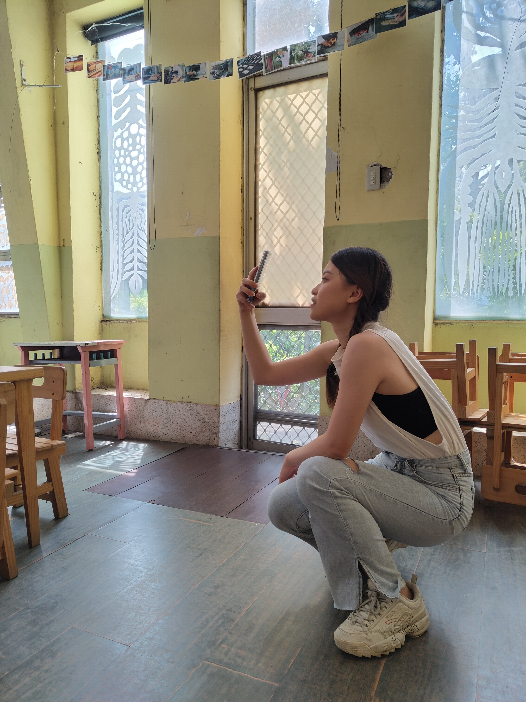

I finished my Bachelor's at National Chengchi University, majoring in Turkish Literature. I interned briefly at a publishing house before going on an exchange program in Navarra, Spain, and managed to backpack around Europe for about 4 months on limited budget before heading home for graduation.
My parents and I thought that was it, that was the time I settled down. But before I knew it, I'm in Abu Dhabi, UAE, working as a flight attendant. I spent years running around the world, not knowing what I'm chasing. It took me a while to realize it was stories, especially where stories & technology meet. So here I am in Leiden~ Ready for the next chapter of my adventure!

Languages I know:
| Prior Knowledge | I experiment with local LLMs and fine-tuning some of them, recently working on LLM memory systems for fun, but never properly learned it. I've made things work, now I'd like to know why they work. |
| Expectations | I hope to learn more about how text is structured & kept in digital form. Also dive more into how evovling technology had shaped the relationship between stories, books, society, and how they will continueshaping them in the future. |